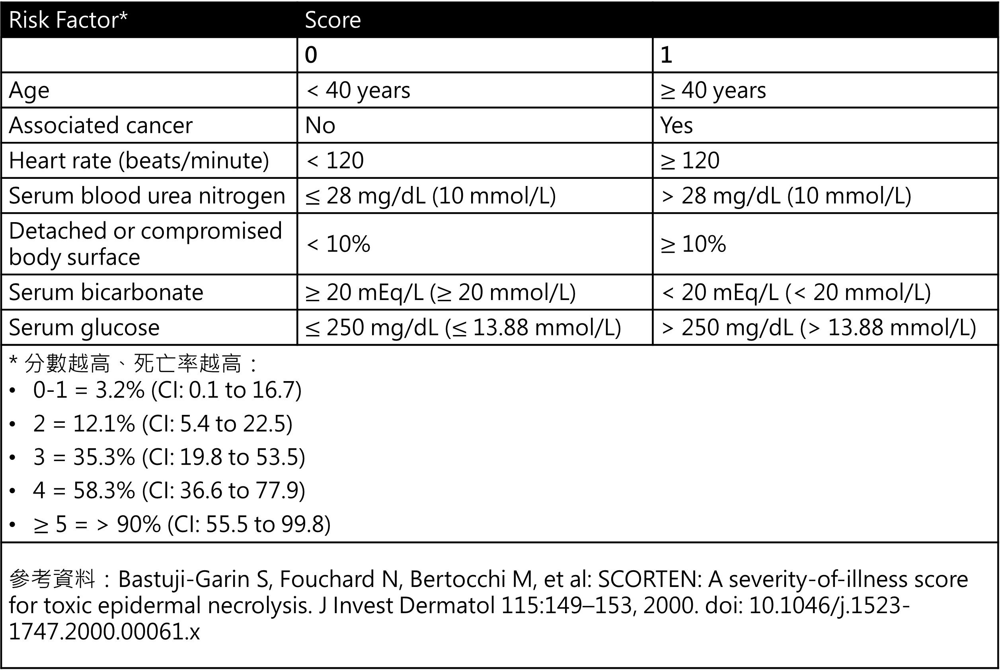

|
臨床表現 |
由藥物引發的可能性 |
發作起始時間 |
致死率 |
|
固定性藥物疹Fixed drug eruption |
100% |
初次1–2 週 再次暴露48小時 大多在24小時以內 |
0% |
|
Drug reaction with eosinophilia and systemic symptoms DRESS/drug-induced hypersensitivity syndrome DIHS |
70-90% |
15-40天 |
5-10% |
|
Stevens–Johnson syndrome Toxic epidermal necrolysis |
70-90% |
7-21天 |
5% 30% |
|
特徵 |
DRESS |
SJS/TEN |
AGEP |
|
發病時間 |
延遲 2-8 週 |
早期 7-21 天 |
非常迅速 4 天 |
|
皮膚特徵 |
麻疹樣變水腫、臉部水腫、可能多形性紅疹 |
暗紅斑塊伴表皮剝離邊緣不清的靶心樣病灶 |
許多無菌性膿疱紅斑水腫基底 |
|
黏膜受累 |
通常輕微或無 |
嚴重 90% 病例 |
約 50% 病例 |
|
全身性受累 |
顯著多器官受累常見 肝、腎、肺等2... |
通常有發燒等但主要問題是表皮剝離21... |
少見 ~17% |
|
實驗室異常 |
嗜酸性球增多非典型淋巴細胞增多肝臟酵素升高 |
血球低下 淋巴球、嗜中性球、血小板 |
嗜中性球增多、輕度嗜酸球增多 |
|
組織病理 |
變異大常有嗜酸性球浸潤無廣泛表皮壞死 |
廣泛角質細胞壞死表皮剝離真皮發炎細胞稀少 |
角質層下膿疱真皮血管周圍嗜中性球浸潤 |
|
常見病因 |
藥物 抗癲癇藥、抗生素 |
藥物 |
藥物 |
|
病毒關聯 |
常伴 HHV-6 等再活化 |
可能與 Mycoplasma pneumoniae 或病毒有關但不如藥物重要 |
少見可能有病毒感染誘發 |
|
預後 |
潛在致命 2-10% |
高致死率 SJS 5%、TEN 15-35% |
低致死率 1-2%、自限性 |
- 名詞定義
- 嚴重皮膚不良反應Severe cutaneous adverse reactions SCARs
- Anaphylaxis
- Anticoagulant-induced skin necrosis
- Acute generalized exanthematous pustulosis AGEP
- Drug rash with eosinophilia and systemic symptoms DRESS/drug-induced hypersensitivity syndrome DIHS
- Generalized bullous fixed drug eruption
- Stevens–Johnson syndrome SJS/ toxic epidermal necrolysis TEN
- 固定性藥物疹Fixed drug eruption
- 定義
- 初次接觸初次接觸特定藥物引發固定性藥物疹時病灶通常會在給藥後幾天到兩週內 1-2 週出現
- 再次接觸再次接觸同種藥物時病灶會在完全相同的部位快速復發
- 復發的發生速度會非常快48 小時通常在 24 小時內
- 病因
- 過敏引起的皮膚血管炎反應
- 常見引起藥物診藥物
- 抗生素
- Sulfa類最常見、Tetracyclines β-lactams、fluoroquinolones、macrolides
- 止痛退燒藥
- NSAIDs、acetaminophen、aspirin
- 其他藥物
- Barbiturates、Dapsone、PPI、Azole類抗黴菌藥物、Pseudoephedrine
- 病生理Type 4過敏反應

- 臨床表現
- 發病時間
- 初次接觸 1-2 週後出現
- 再次接觸48 小時通常在 24 小時內
- 常見部位生殖器、肛門周圍 、手腳、臉部、嘴唇
- 發作型態
- 邊界清晰、卵圓形紅斑塊通常為單一伴隨著搔癢及發熱症狀水腫狀斑塊脫屑desquamation並產生色素沈著棕色、黑色斑
- 可能有標靶病變target lesion
- 每次服用相同藥物後都會在相同部位出現藥物疹的現象
- 診斷
- 主要基於病史包括用藥史和病灶復發的特徵、臨床表現
- 皮膚激發provocation test試驗
- 建議在過敏發作結束後一段時間內4-6週進行以免受耐受期refractory period影響
- 協助釐清致病藥物
- 試驗種類
- oral challenge test
- 病人暴露於懷疑藥物中增加劑量直到給予完整劑量或發生過敏反應為止
- 測試過程中能耐受藥物並完成完整劑量則表示病人對該藥物沒有藥物過敏反應
- skin patch test陽性率40%
- 貼於上背部並保留48小時
- 在 3-7 天時進行判讀
- 建議在曾有病灶的部位進行原位貼膚試驗 in situ patch test
- 處置
- 立即停用懷疑致病藥物
- 預後
- 通常是自限性疾病通常在停藥後幾天內消退可能需1-2週才能完全消退
- 再次用藥時可能復發
- Stevens-Johnson syndromeSJS、毒性表皮壞死溶解症Toxic epidermal necrolysis TEN
- 定義依水泡、破皮面積佔全身體表面積body surface area BSA比例
- SJS10% BSA
- SJS-TEN overlap10-30% BSA
- TEN30% BSA
- 流行病學
- 女 男1.51
- 發病年齡任何年齡都可能發生
- 病因幾乎是藥物造成、感染/疫苗相對罕見
- 常見藥物抗癲癇藥物carbamazepine、phenytoin、Lamotrigine、allopurinol、sulfa類抗生素、NSAID
- 亞洲種族HLA-B基因型與特定藥物所引起的SJS/TEN相關
- HLA-B*1502carbamazepine、phenytoin、Lamotrigine
- HLA-B*5801allopurinol

參考資料Dermatology 4th ed. p.349
- 病生理
- 目前認為和藥物激發Type 4過敏反應有關
- 透過與人類白血球抗原HLA的交互作用活化特異CD8+T cellT cell增生、浸潤到皮膚組織中攻擊表皮細胞表皮細胞大量的凋亡apoptosis
- 皮膚切片中會看到整層表皮的壞死與溶解
- 臨床表現
- 前驅症狀被觸發後1-3週
- 發燒、喉嚨痛
- 肌痛、關節痛
- 頭痛
- 結膜發紅、嘴巴破皮、生殖泌尿道等黏膜破皮
- 皮膚黏膜病變前驅症狀出現後1-3天
- 皮膚病變影響所有患者
- 臉部和軀幹最初出現疼痛性紅斑中心呈紫斑狀非典型target lesion
- 快速擴散並融合成大水泡bullae擴展至廣泛表皮壞死、真皮/表皮分離與表皮脫落
- 表皮脫落後1-2週再上皮化Reepithelialization
- Nikolsky sign+
- 黏膜病變 ≧ 90%患者
- 口腔口腔炎、唇炎、潰瘍
- 眼部結膜炎、角膜炎、虹膜炎、前葡萄膜炎
- 生殖泌尿道生殖器糜爛如龜頭糜爛、外陰糜爛、陰道糜爛、尿道糜爛
- 診斷
- 臨床診斷根據病史、黏膜皮膚病變診斷
- 確認診斷皮膚切片裂解位置Stratum germinativum

- 併發症
- 大面積皮膚脫落剩下真皮層裸露在外
- 急性脫水、體溫/電解質失調、低血容性休克、繼發性感染、敗血症和感染性休克
- 眼科眼部疤痕和視力喪失最常見、乾性角結膜炎、睫毛倒刺Trichiasis
- 皮膚科色素沉澱、色素沉澱過少、掉髮、指甲脫落
- 泌尿生殖系統尿道狹窄、陰道沾黏、性交困難、包莖、性功能障礙
- 胃腸道狹窄、緊縮、吞嚥困難
- 處置
- 立即停用懷疑致病藥物
- 支持性療法與大面積燒傷類似維持生理穩定、預防併發症發生
- 傷囗、黏膜照護
- 非脫皮區域保持乾燥
- 臉部結痂以生理食鹽水每日清洗必要時使用抗生素藥膏
- 眼睛每日眼科評估生理食鹽水清洗 + 抗生素眼膏與眼藥水
- 口腔定時以生理食鹽水沖洗昏迷者需抽吸避免吸入性肺炎
- 鼻腔、耳朵棉棒清潔 + 抗生素或凡士林藥膏
- 肛門生殖區、指間每日清潔潮濕導致浸潤maceration者可用0.5%硝酸銀溶液
- 維持電解質及體液平衡
- 適當鎮靜止痛
- 良好呼吸照護
- 系統性治療
- 類固醇
- 免疫抑制劑
- IVIG、血漿交換術移除血中免疫活性物質、降低過敏反應
- 預後
- SJS平均死亡率1-5%
- TEN平均死亡率25-35%
- 預後評估Severity-of-Illness Score for Toxic Epidermal Necrolysis SCORTEN

- Drug reaction with eosinophilia and systemic symptoms DRESS Drug-induced hypersensitivity syndrome DIHS
- 定義
- 罕見、潛在致命的免疫介導性藥物不良反應特徵是皮膚表現伴隨內部器官影響
- 病因
- 幾乎由藥物引起70-90%
- 抗癲癇藥lamotrigine、phenytoin、carbamazepine、phenobarbital、oxcarbazepine、zonisamide
- 抗生素dapsone、sulfamethoxazole/trimethoprim、piperacillin/tazobactam、vancomycin、minocycline、abacavir、nevirapine、磺胺類藥物、rifampicin
- Allopurinol
- HHV-6初次感染或再次活化
- 危險因子免疫低下族群、藥物基因易感性Pharmacogenetic susceptibility
- 病生理學
- 遺傳易感性與Type 4過敏反應之間的相互作用
- 與IL-5活化嗜酸性細胞增生、皮膚和內臟器官中藥物特異性 T cell活化有關
- 臨床表現
- 發病時間 Time interval
- 初次接觸通常在藥物暴露後 2-8 週出現症狀
- 再次接觸暴露後數小時或數天
- 症狀
- 發燒通常是高燒38.5°C伴隨高低起伏85%
- 瀰漫性皮疹75%以麻疹樣皮疹開始隨後變為水腫樣
- 淋巴結腫大
- 臉部水腫
- 內部器官影響見"併發症"
- 診斷
- 主要基於臨床表現發燒、瀰漫性皮疹、詳細的藥物史最近 2-8 週內開始使用的藥物、是否有內部器官受影響、是否有嗜酸性球增加常見綜合判斷
- RegiSCAR score協助診斷DRESS
|
項目 |
Yes |
No |
Unknown |
說明 |
|
發燒 38.5°C |
0 |
-1 |
-1 |
必要項目之一 |
|
淋巴結腫大≥2處且每處1 cm |
1 |
0 |
0 |
典型表現 |
|
非典型淋巴球Atypical lymphocytes |
1 |
0 |
0 |
|
|
嗜酸性球 |
|
|
|
以下擇一計分 |
|
700–1499 或佔白血球10–19.9% |
1 |
0 |
0 |
|
|
≥1500 或 ≥20% |
2 |
0 |
0 |
|
|
皮疹 |
|
|
|
以下三項獨立計分 |
|
面積 50% 體表面積 |
1 |
0 |
0 |
|
|
具2種以上特徵如水腫、浸潤、紫癜、脫屑 |
1 |
-1 |
0 |
|
|
皮膚切片符合 DRESS |
0 |
-1 |
0 |
|
|
器官影響 |
|
|
|
以下擇一計分 |
|
一個器官 |
1 |
0 |
0 |
|
|
兩個以上器官 |
2 |
0 |
0 |
|
|
症狀持續超過15天 |
0 |
-1 |
-1 |
|
|
已排除其他診斷完成至少3項生化檢查且為陰性 |
1 |
0 |
0 |
|
|
總分與診斷標準 |
|
|
|
|
|
≤1 否定No case 2–3 可能Possible case 4–5 可能性高Probable case ≥6 確診Definite case |
|
|
|
|
- 處置
- 立即停用懷疑致病藥物
- 全身性類固醇PO、IV1st line通常需要長時間的逐漸減量
- 其他治療cyclosporine、cyclophosphamide、血漿置換術、IVIg
- 通常用於難治性病例或對皮質類固醇有禁忌症時
- 併發症
- 其他器官侵犯常見影響器官包括肝臟最常見、腎臟、肺部、心臟、肌肉、胰臟
- 肝臟肝臟壞死、衰竭
- 腎臟GFR、急性間質腎炎
- 心臟心肌炎
- 肌肉肌肉痠痛、無力
- 胰臟amylase/lipase、胰臟炎
- 多重器官衰竭
- 預後
- 死亡率約2-10%
- 肝臟壞死導致肝臟衰竭為主要死因
- 延遲停藥會使預後惡化
- 症狀可能需要數週或數月才能緩解
- 急性廣泛性發疹性膿疱病 Acute Generalized Exanthematous Pustulosis AGEP
- 流行病學
- HLA-B5、-DR11、-DQ3 在 AGEP 患者中更常見
- 病因最常見的原因是藥物超過90%病例
- 常見藥物
- 抗生素Penicillins、Cephalosporins、Clindamycin、磺胺類藥物、Metronidazole、Carbapenems、Quinolones、Macrolides
- 鈣離子通道阻滯劑 Calcium channel blockers特別是Diltiazem
- 其他罕見原因包括
- 病毒感染如腸病毒
- 汞
- 疫苗
- 胰島素注射罕見
- 病生理學Type 4過敏反應
- 臨床表現
- 發病非常迅速通常在給藥後短於 4 天出現皮疹。再次接觸致病藥物時發病時間會更短
- 皮膚病灶
- 皮疹通常開始於臉部或主要的皺摺區如腋窩和腹股溝然後在數小時內擴散全身通常持續 1-2 週
- 特徵為大量、微小 5 mm、主要為非毛囊性、無菌性膿疱
- 發生在全身的水腫性紅斑皮膚上膿疱可能匯合
- 消退後通常會出現表面脫屑
- 可能伴隨灼熱感、瘙癢
- 黏膜侵犯50%
- 全身症狀
- 常伴隨高燒 通常 ≥ 38.5°C
- 少數患者17%有全身系統侵犯
- 主要部位是肝臟、腎臟和肺部急性呼吸窘迫
- 其他特徵
- 白血球升高伴明顯嗜中性球增多、輕度至中度嗜酸性粒細胞增多
- 短暫腎功能不全
- 肝功能異常
- 低血鈣
- 處置
- 立即停用所有可能的致病藥物
- 支持性治療
- 通常不常規推薦預防性抗生素除非有感染跡象
- 預後
- 通常是自限性疾病
- 皮疹通常在停藥後 1-2 週內消退
- 不會進展為毒性表皮壞死症 TEN
- 死亡率相對較低約1-2%